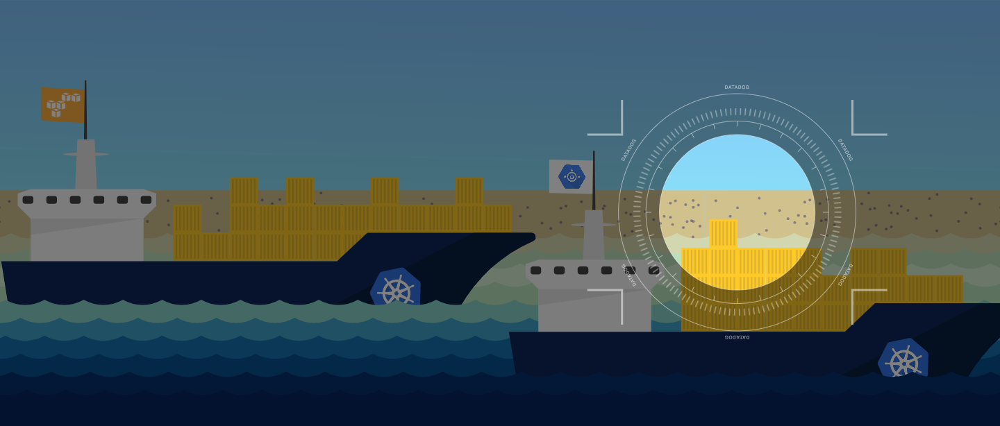
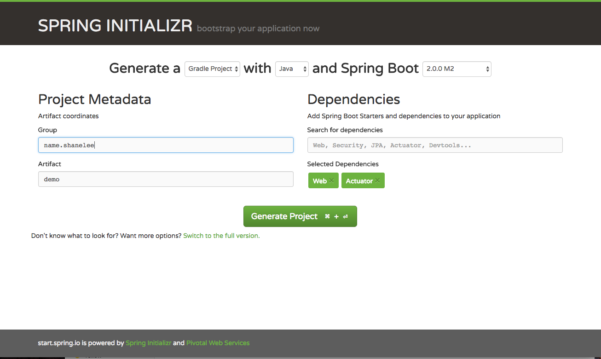
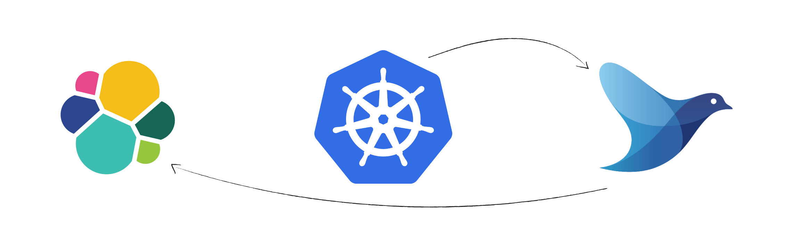

TL;DR
That title is a bit of a mouthful...
Over the last two weeks I have been playing with kubernetes. I have extensive experience building microservices and below I will demonstrate how to build a microservice, contain it using docker and deploy on kubernetes.

Creating a microservice project using spring boot
Spring boot allows a developer to build a production-grade stand-alone application, like a typical CRUD application exposing a RESTful API, with minimal configuration, reducing the learning curve required for using the Spring Framework drastically.
Spring Boot favors convention over configuration and is designed to get you up and running as quickly as possible.
Create spring boot application
To create your spring boot app we will use Spring Initializr web page and generate a Gradle Project with the pre-selected Spring Boot Version.
We define name.shanelee as Group (if applicable) and define the artifact name. From here you can choose whatever dependencies you need for your microservice. We use Web for supporting tomcat and restful API.
Actuator dependency which implements some production-grade features useful for monitoring and managing our application like health-checks and HTTP requests traces.

Spring Initializr has already created everything for us. We just need to have a Java JDK 1.8 or later installed on our machine and the JAVA_HOME environment variable set accordingly.
### Extracting and launching the application
shanelee at shanes-MacBook-Air in ~/java-projects
$ unzip ~/Downloads/demo.zip -d microservice
$ cd microservice/demo/
$ ./gradlew bootRun
The application is up and running and we did not write one line of code!
Spring Boot is opinionated and auto-configures the application with sane default values and beans. It also scans the classpath for known dependencies and initializes them. In our case, we immediately enjoy all the production-grade services offered by Spring Actuator.
~$ curl http://localhost:8080/health
{"status":"UP","diskSpace":{"status":"UP","total":981190307840,"free":744776503296,"threshold":10485760}}
NB: Actuator endpoints is important when we deploy the container in kubernetes. It needs to know when the microservice is ready to handle network traffic.
For more information see https://kubernetes.io/docs/tasks/configure-pod-container/configure-liveness-readiness-probes/
Packaging a Spring Boot application as a Docker container
Let's start by creating the Dockerfile in the root directory of our project.
FROM openjdk:8u131-jdk-alpine
VOLUME /tmp
WORKDIR /app
COPY ./build/libs/demo-0.0.1-SNAPSHOT.jar .
ENTRYPOINT ["java","-Djava.security.egd=file:/dev/./urandom","-jar","/app/demo-0.0.1-SNAPSHOT.jar"]
The FROM keyword defines the base Docker image of our container. We chose OpenJDK installed on Alpine Linux which is a lightweight Linux distribution. To understand why I use alpine as base image check out these benefits
The VOLUME instruction creates a mount point with the specified name and marks it as holding externally mounted volumes from the native host or other containers. ENTRYPOINT defines the command to execute when the container is started. Since Spring Boot produces an executable JAR with embedded Tomcat, the command to execute is simply java -jar microservice.jar. The additional flag java.security.edg=file:/dev/./urandom is used to speed up the application start-up and avoid possible freezes. By default, Java uses /dev/random to seed its SecureRandom class which is known to block if its entropy pool is empty.
Logging
Treat logs as event streams
This is what is recommended by 12factor principles.
Microservice should not attempt to write to or manage logfiles. Instead, each running process writes its event stream, unbuffered, to stdout. During local development, the developer will view this stream in the foreground of their terminal to observe the app’s behavior.
In staging or production deploys, each process’ stream will be captured by the execution environment and routed to one or more final destinations for viewing and long-term archival.
As I will be using kubernetes, I will define a daemonset logging shipper called fluentd.
Daemonset and Fluentd

A DaemonSet ensures that a certain pod is scheduled to each kubelet exactly once. The fluentd pod mounts the /var/lib/containers/ host volume to access the logs of all pods scheduled to that kubelet
Daemonset for fluentd can be found here
Kubernetes logs the content of the stdout and stderr streams of a pod to a file. It creates one file for each container in a pod. The default location for these files is /var/log/containers . The filename contains the pod name, the namespace of the pod, the container name, and the container id. The file contains one JSON object per line of the two streams stdout and stderr.
Fluentd is a flexible log data collector. It supports various inputs like log files or syslog and supports many outputs like elasticsearch or Hadoop. Fluentd converts each log line to an event. Those events can be processed and enriched in the fluentd pipeline.
Considerations for Production Deployments
In a production environment you have to implement a log rotation of the stored log data. Since the above fluentd configuration generally will generate one index per day this is easy. Elasticsearch Curator is a tool made for exactly this job.
Curator can run as a container similar to one I defined here also or a scheduled lambda function.
Logs to stdout have to be in JSON format.
Kubernetes
Kubernetes is an open-source system for automating deployment, scaling, and management of containerized applications.
I will discuss how to run kubernetes locally using minikube and how to define resource objects for the microservice above. In a later post I will talk about creating cluster on aws using kops.
How to run kubernetes locally
To run kubernetes locally you need minikube. Minikube runs a single-node Kubernetes cluster inside a VM on your laptop for users looking to try out Kubernetes or develop with it day-to-day.
To install locally follow the steps here
Increase the storage size when starting
minikube start --disk-size="10g" --memory="4096"
#Switch to minikube context
kubectl config use-context minikube
After cluster created, open the dashboard. Dashboard is an addon for kubernetes.
minikube dashboard
Create deployment and service for demo microservice
To test locally build and tag your docker image
You can point your docker client to the VM's docker daemon by running
eval $(minikube docker-env)
docker build -t demo .
You should see output like below
Sending build context to Docker daemon 15.76MB
Step 1/5 : FROM openjdk:8u131-jdk-alpine
8u131-jdk-alpine: Pulling from library/openjdk
88286f41530e: Pull complete
009f6e766a1b: Pull complete
86ed68184682: Pull complete
Digest: sha256:2b1f15e04904dd44a2667a07e34c628ac4b239f92f413b587538f801a0a57c88
Status: Downloaded newer image for openjdk:8u131-jdk-alpine
---> 478bf389b75b
Step 2/5 : VOLUME /tmp
---> Running in ff8bd4023ec3
---> 61232f70a630
Removing intermediate container ff8bd4023ec3
Step 3/5 : WORKDIR /app
---> 79ea27f4f4ea
Removing intermediate container 01fac4d0f9a3
Step 4/5 : COPY ./build/libs/demo-0.0.1-SNAPSHOT.jar .
---> f9aa60a3ac4a
Removing intermediate container d90236650b23
Step 5/5 : ENTRYPOINT java -Djava.security.egd=file:/dev/./urandom -jar /app/demo-0.0.1-SNAPSHOT.jar
---> Running in 7c8a6c01cef0
---> abdcba6bf841
Removing intermediate container 7c8a6c01cef0
Successfully built abdcba6bf841
Successfully tagged demo:latest
Addons
Minikube has a set of built in addons that can be used enabled, disabled, and opened inside of the local k8s environment.
To enable addon for minkube run minikube addons enable <addon>
To verify get the list of addons
$ minikube addons list
- dashboard: enabled
- default-storageclass: enabled
- kube-dns: enabled
- heapster: disabled
- ingress: enabled
- registry: enabled
- registry-creds: disabled
- addon-manager: enabled
Below is a sample deployment config. Here I defined the service and deployment resource objects.
apiVersion: v1
kind: Service
metadata:
name: demo-microservice
labels:
app: demo
spec:
ports:
- port: 8081
selector:
app: demo
tier: microservice
type: LoadBalancer
---
---
apiVersion: extensions/v1beta1
kind: Deployment
metadata:
name: demo-microservice
creationTimestamp: null
labels:
app: demo
spec:
replicas: 1
strategy:
type: Recreate
template:
metadata:
creationTimestamp: null
labels:
app: demo
tier: microservice
env: dev
spec:
containers:
- name: demo
image: demo
imagePullPolicy: Never
ports:
- containerPort: 8081
env:
- name: SERVER_PORT
value: "8081"
This is the definition of a Kubernetes Deployment named demo-microservice. The replicas element defines the target number of Pods. Kubernetes performs automated binpacking and self-healing of the system to comply with the deployment specifications while achieving optimal utilization of compute resources. A Pod can be composed of multiple containers. In this scenario, I included one container: one for demo microservice image.
If using private docker registry you need to set an entry under the imagePullSecrets which is used to authenticate to the docker Registry.
For a detailed explanation of Kubernetes resources and concepts refer to the official documentation.
Demo creation
Now create the service and deployment
$ kubectl apply -f deployment.yml --record
service "demo-microservice" configured
deployment "demo-microservice" created
Kubernetes will create one pod with one container inside.
To verify the pod is running
kubectl get pods
#To tail the logs of the microservice container run
kubectl logs -f <pod>
Now that the container is running in the pod, we can verify the health of the microservice.
The pod is exposed through a service.
To get information about the service run
$ kubectl describe svc demo-microservice
To access locally get the public url
$ minikube service demo-microservice --url
http://192.168.99.100:31511
Verify health
Then hit the health endpoint to verify the status of the microservice
$ curl http://192.168.99.100:31511/health
{"status":"UP","diskSpace":{"status":"UP","total":19163156480,"free":9866866688,"threshold":10485760}}
Configure Liveness and Readiness Probes
Now that we are happy with the deployment, we are going to add an additional feature.
The kubelet uses liveness probes to know when to restart a Container. For example, liveness probes could catch a deadlock, where an application is running, but unable to make progress. Restarting a Container in such a state can help to make the application more available despite bugs.
The kubelet uses readiness probes to know when a Container is ready to start accepting traffic. A Pod is considered ready when all of its Containers are ready. One use of this signal is to control which Pods are used as backends for Services. When a Pod is not ready, it is removed from Service load balancers.
The right combination of liveness and readiness probes used with Kubernetes deployments can:
Enable zero downtime deploys
Prevent deployment of broken images
Ensure that failed containers are automatically restarted
livenessProbe:
httpGet:
path: /health
port: 8081
httpHeaders:
- name: X-Custom-Header
value: Awesome
initialDelaySeconds: 30
periodSeconds: 3
The livenessProbe field specifies that the kubelet should perform a liveness probe every 3 seconds for demo. The initialDelaySeconds field tells the kubelet that it should wait 30 seconds before performing the first probe.
To perform a probe, the kubelet sends an HTTP GET request to the server that is running in the Container and listening on port 8081. If the handler for the server’s /health path returns a success code, the kubelet considers the Container to be alive and healthy. If the handler returns a failure code, the kubelet kills the Container and restarts it.
To try the HTTP liveness check, update the deployment
$ kubectl apply -f kubernetes/deployment.yml --record
If you describe the pod, you will see the liveness http request
Liveness: http-get http://:8081/health delay=30s timeout=1s period=3s #success=1 #failure=3
The readiness probe has similar configuration:
readinessProbe:
httpGet:
path: /health
port: 8081
initialDelaySeconds: 30
periodSeconds: 10
Readiness and liveness probes can be used in parallel for the same container. Using both can ensure that traffic does not reach a container that is not ready for it, and that containers are restarted when they fail.
To verify these changes, spring boot actuator has a production ready endpoint called trace.
Displays trace information (by default the last 100 HTTP requests).
If you access this endpoint, you will see the health requests like below
http://192.168.99.100:31511/trace
{timestamp: 1499927068835,info: {method: "GET",path: "/health",headers: {request: {host: "172.17.0.3:8081",user-agent: "Go-http-client/1.1",x-custom-header: "Awesome",accept-encoding: "gzip",connection: "close"},response: {X-Application-Context: "application:local:8081",Content-Type: "application/vnd.spring-boot.actuator.v1+json;charset=UTF-8",Transfer-Encoding: "chunked",Date: "Thu, 13 Jul 2017 06:24:28 GMT",Connection: "close",status: "200"}},timeTaken: "4"}},
The actuator endpoints provide a wealth of information for your microservice. Make sure you become accustomed to them.
There you have it!
A working example of using spring boot, docker and kubernetes.
Stay tuned for more kubernetes goodness... ;-)
If you want to view the sample code check out github repo here